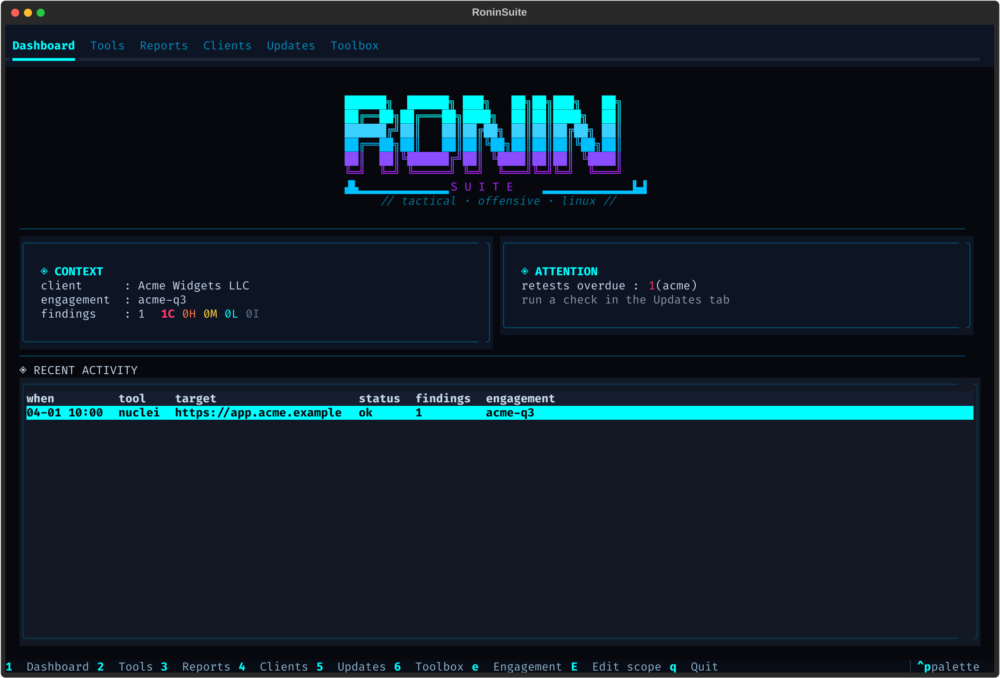

01 / SCOPEGATED
Define the boundary
Set in-scope assets, exclusions, test windows, and rules of engagement before a command runs.
SCOPE CHECK → AUDIT LOG
CYBERCORE / FIELD SYSTEMS · LINUX
A portable console for authorized security assessments. Keep engagement scope, tool runs, evidence, and polished reports together in one field-ready workspace.

RoninSuite keeps the engagement record connected while each integrated tool does what it does best.
Set in-scope assets, exclusions, test windows, and rules of engagement before a command runs.
Launch reconnaissance, scanning, web, and validation tools from one live console.
Keep severity, CVSS, evidence, remediation, and status in a consistent record.
Generate executive, technical, and remediation reports in Markdown, HTML, and PDF.
Actual RoninSuite screens and sample report pages. Select a capture to inspect it at full size.
Engagement context, findings, retest alerts, and recent activity.
Configure a run and stream its output in the console.
Track assessment history, remediation progress, and what is due.
Review severity, CVSS, evidence, and remediation status together.
Check bundled tools and template freshness before a run.
Risk, scope, and priorities for stakeholders.
Findings organized with impact, evidence, and verification context.
Prioritized actions move teams from finding to verified fix.
ⓘ Screens 06–08 use fictional Acme Widgets sample data.
The prepared USB bundle carries RoninSuite, its Python runtime, dependencies, native libraries, and 12 integrated pentest tools. Connect it to a supported Linux x86-64 system and start with the doctor check.
Platform: Linux x86-64 · glibc 2.44+
Workspace: engagement data travels with the drive
OFFLINE-CAPABLE WORKSPACE
Choose a palette to preview it across the whole page. Every color comes from the Cybercore theme schema.
RoninSuite is built for assessments with written permission. Targets outside engagement scope are blocked unless an explicit, logged override is supplied.
Explore the project source, read setup details, or check the CLI reference.